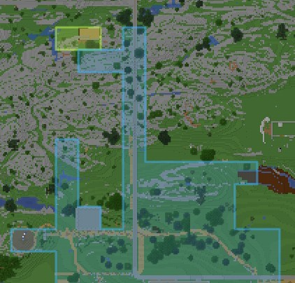
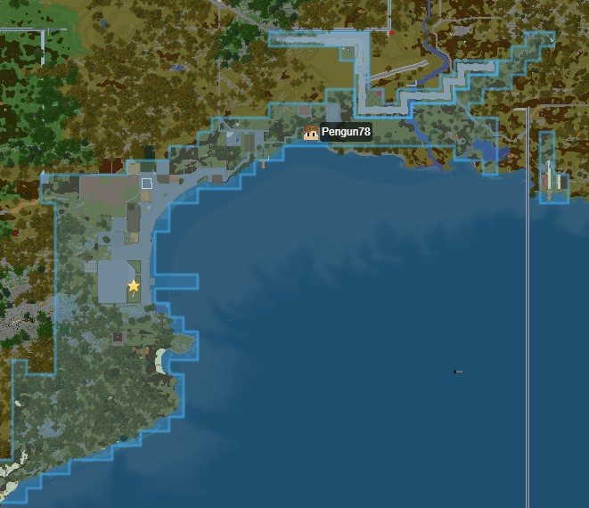
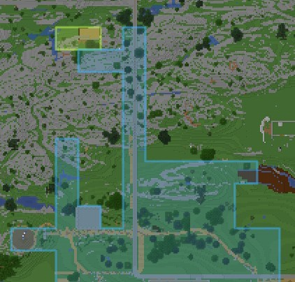
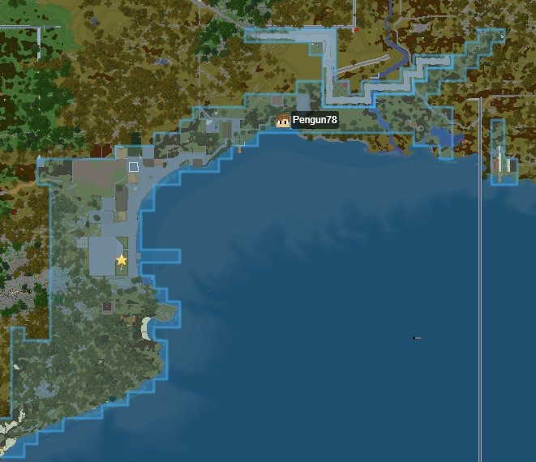

EarthMC Rules: Law of Nations
1. Cheating, server exploits and alternative accounts.
-
1.1 Cheat clients and other modifications.
Cheat clients, macro keys and other modifications which give the player gameplay leverage over other players are not allowed. Players found breaking this rule will face a permanent ban, and yes, permanent means permanent.
This rule does not apply to:- Optifine and other performance improvement mods.
- Armor and effect status HUD mods.
- Minimap mods unless they display more information than our Dynmap provides.
- Purely aesthetic mods.
- Litematica (Schematica is not allowed however)
-
1.2 Knowingly benefitting from or assisting others in breaking server rules.
Players found intentionally assisting in, knowingly participating in, or knowingly benefitting from other players breaking any of the rules listed on this page may be treated as if they committed the act themselves. -
1.3 Technical errors and server exploits.
Players are not allowed to take advantage of apparent server bugs or otherwise exploit technical oversights. Players found taking advantage bugs or technical oversights without notifying staff may be permanently banned. -
1.4 Alternative accounts.
Alternative accounts or “alts” for short are not allowed. You may only use one account per player. Alternative accounts will be banned and the player’s main account may be warned if this rule is deliberately broken. Please contact server staff if you wish to switch your main account. -
1.5 Intentionally causing lag or disrupting EarthMC services.
Players intentionally causing harm to the services we provide may be permanently banned.
2. Behavior and chat
-
2.1 Teleport traps
The act of tricking players into teleporting to a specific location or person just to kill or trap them is not allowed. This used to be allowed but a lot of players abused it to the degree players voted to forbid it.
Normal traps that don't involve players blindly teleporting into them are allowed however, as long as the player doesn't get stuck for a longer period of time. -
2.2 Stealing and raiding players/towns/nations.
Stealing from and raiding other players is allowed. It’s up to each and every player to protect their assets. (Towny is a bit more strict than the factions server, see rule 3) -
2.3 Spam.
Spamming or sending messages in a way that disrupts chat flow, normally by sending a similar message repeatedly, is not allowed. -
2.4 Toxicity.
Toxicity is not allowed on this server. Toxicity in chat includes but is not limited to:
- - Insulting others.
- - Bullying/harassing others.
- - Name-calling.
- - Vulgar chat, using explicit language, inappropriate content which would be obscene or lewd talk.
- - Talking or threatening about self-harm, or other deeply negative experiences.
- - Leading or encouraging violence or hatred towards other players.
- - Constructing buildings/pixel art that can be considered racist/sexually explicit or containing hate speech/symbols.
- - Being malicious, toxic towards the staffs or anyone.
- - Messages with sexual characters and sexual harassment.
- - Hate Speech, discrimination in any form, such as negative comments related to skin color, race, sex/gender, sexual orientation, disability, religion/beliefs, or other personal qualities.
Toxicity is evaluated on a case by case basis and staff has final say in what is considered toxic behavior. Repeated behavior may lead to warnings, mutes and eventually a permanent ban. -
2.5 Impersonating other players, towns and nations.
Impersonating players by taking advantage of, but not limited to, usernames, nicknames, town/nation names is not allowed. Offenders will be asked to revert to their proper character. If any damage is done staff may choose to ban the offending player. -
2.6 AFK time.
You are not allowed to be AFK more than 15 minutes, if you are found using a method of circumventing the auto-kicking staff will take action. -
2.7 Sharing personal information.
Sharing personal information and identities of others without their explicit permission is strictly forbidden. Personal information may be, but not limited to, “real life” photos of players, phone numbers, home addresses, social networks, school/work location, family relations and IP-addresses. -
2.8 Sharing links
Malicious links are not allowed, this includes for instance viruses or ip loggers. Links which contribute to breaking any of the rules listed on this page are not allowed. This includes sending links to other players in Discord for instance as well.
Linking to sexual or extremely violent/disturbing content is not allowed. Other links are allowed, although they may get caught by the spam filter.
-
2.9 Advertising.
Advertising is not allowed unless it’s related to the server. -
2.10 Selling content and services for real money.
You are not allowed to sell in-game items or services for real life money, or vice-versa. -
2.11 Language in global chat channels.
When speaking in either the global chat or the donator chat channel you should stick to English only. You can use other private chat channels for other languages such as town chat or private messages. If there are only or almost only players who also speak your language online you are allowed to speak it in the global channels too.
3. Griefing (Towny only)
-
3.1 Destroying land around claims.
Players may not damage terrain around claims (griefing). Players breaking this rule will be warned and damage will be rolled back. Players doing this more than once may face a permanent ban. Please note that mayors/kings are responsible for misconfigured town/nation permission settings. Examples of grief:- Cobble monsters - Mountain-like structures that are built using lava and water.
- Lava/water curtains - Placing rows of lava/water in the sky to make a wall of falling lava.
- TNT craters.
- Mass spawning entities within or around a town (Chickens, Boats, etc.).
-
3.2 Destroying land in wilderness.
Wilderness is defined by Towny as any land not currently claimed. You are allowed to grief structures or terrain as long as they are not within or in close proximity to a claimed area. However, any player may request major terrain grief to be rolled back even in the wilderness. Breaking railways or ice roads is not allowed even in the wilderness, if willingly connecting two existing towns. This does not only apply to the rails but all blocks the railroad is made of. -
3.3 Claim blocking.
“Claim blocking” is referring to the act of deliberately placing claims near a town in order to block its expansion. This includes placing a new town next to another with the intent of blocking their expansion.
 

A town's claims count as blocking if they create long arms of claims protruding from their town like in the images above. These arms are an issue as they do not only block existing towns but also take up large areas where future towns could otherwise be created.
Only mayors of towns being claim blocked may report breaking the rule as claiming along someone's border is fine if all involved towns agree on it.
All claims which staff concludes to be blocking a town will be removed without any refund. Players found to be claim blocking more than once may be warned and denied the ability to place outposts all together. -
3.4 Stealing specific blocks.
Stealing specific blocks for their value is not considered grief and is therefore allowed. This does not apply to easily acquired blocks even if they are valuable to you. -
3.5 Major terraforming.
In order to preserve the accurate geography of the map, major terraforming of the natural terrain is not allowed. In general, if your edits of the landscape alter the Dynmap view of the natural landscape, they will be removed. Examples of this includes for instance draining large lakes/rivers, creating artificial islands which do not exist in real life, or covering the ocean with platforms. Usually vertical terraforming is allowed as it does not change the dynmap view. -
3.6 Map art.
Creating map art is allowed as long as it does not interfere with other towns. It is recommended to place map art in Antarctica as there is a lot of unused space there. If you place it outside of Antarctica you will have to claim the area as it will count as proximity greifing if the other towns around you don't like it.
Your map art may not contain nudity, sexual content, racist imagery or anything else that breaks any part of rule 2.
4. Naming
-
4.1 Nation names.
Before creating a nation, make sure your name complies with the nation naming rules. Nation names may be changed by a staff member if rule is not followed and may be disbanded if the rule is repeatedly broken.- Nation name cannot be fictional. It has to have the same name as a current or past nation.
- Nation can be named after region, province or other large geographical area with defined borders if accurate nation name is already taken.
- Nation name must correspond with map location of the nation capital.
- Nation cannot have a similar name to already established nation to the point where one could easily be confused with the other.
-
4.2 Town and faction names.
Before creating a town or faction, make sure your name complies with the naming rules. Names may be changed by a staff member if rule is not followed.- Fictional town or faction names are allowed. However, we highly recommend towns to have a name tied to the real life town location.
- Town and faction names cannot be inappropriate/toxic/offensive.
- Towns and factions cannot have similar names to already established towns/factions to the point where one could easily be confused with the other.
-
4.3 Nicknames, Minecraft usernames and Towny titles
Do not use explicit, sexual, racist or otherwise inappropriate nicknames, Minecraft usernames or Towny titles.
How and where do I appeal my punishment?
You have the chance to appeal for any punishments provided by staff. To do so visit our dedicated discord server for support and ban appeals found here (this server is different from our main discord server). Use the -new command to open a channel and follow the instructions.
How do I report a player breaking the rules?
Please join our support discord server here and start a new support ticket by running the command “-new”. A separate text channel will be provided named after your ticket number. You do not have to wait for staff to reply here, instead provide as much evidence as you have of the player and which rules are broken from the list above.
Who is a player and who does above rules apply to?
Everyone playing on EarthMC Minecraft server or anyone part of our discord server is a player. Players cover all ranks.
Who is staff?
Anyone who holds the Mod, Admin and Owner rank is considered staff. Plugin developers are not staff although they may have access to support tickets so they can use your feedback to improve their plugins.
How do I report staff abuse?
Please contact Fix#0001 or KarlofDuty#5275 through discord and provide as much evidence as possible.